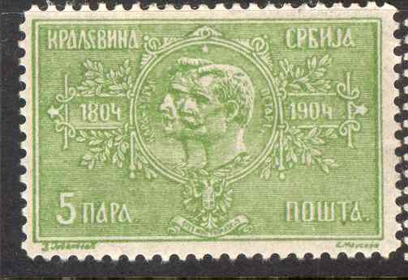

Note: on my website many of the
pictures can not be seen! They are of course present in the
catalogue;
contact me if you want to purchase the catalogue.
Louis Pasche was a stamp forger. I don't have much information on him right now, if you possess more information, or images of his forgeries, please contact me. It is certain that he lived in Lausanne (23 Tour) in April 1928, since he send around advertising brochures with samples of stamp forgeries (Serbia 1904, Surinam 1893 and Haiti 1904). He offers the complete (unsurcharged) set of 6 stamps of Surinam for 50 Swiss Francs (10 sets) or 400 Swiss Francs (100 sets). On this list he also offers forgeries of Serbia (1904 set, 8 values), Haiti (1904, 4 values) and Transvaal (No. 86, 104, 105; according to the Yvert&Tellier catalogue, the 5 Pounds 1885 stamp and the 5 Sh and 10 Sh 1895 stamps).
Distinguishing charcateristic of this forgery, the horizontal
inner lower right frameline continues towards the right (see red
arrow)

Forgeries of Serbia which were made by Lucian
Smeets and sold by Louis Pasche.
In the newspaper "Le Petit Parisien" of
2 December 1926 the following text can be found showing that
Pasche was involved with Georges and Antoinette Aldebert in
forging stamps in 1926:
L'EXPLOITATION DES PHILATÉLISTES
Le 19 juillet dernier la police arrêtait, au moment où ils
allaient franchir la frontière franco-suisse, à Frasne, les
époux Aldebert, soupçonnés de se livrer au traffic des faux
timbres pour collections.
Une perquisition fit découvrir à leur domicile, a Asnières,
tout un matériel servant à la fabrication et la falsification
de fausses surcharges de timbres-poste, ainsi qu'un lot important
de timbres falsifiés.
M. Bacquart, juge d'instruction, après une longue enquête,
vient de renvoyer devant le tribunal correctionnel Georges
Aldebert, qui sera défendu par Mes J.-L. Thaon et Lebeau; sa
femme, Antoinette Aldebert, née Leclerc, ainsi que
deux complices, Louis Pasche
et Jean de Reusis, auxquels le parquet reproche d'avoir écoulé
des timbres falsifiés, et qui seront assistés de Mr Godard. La
chambre syndicale des négociants en timbres-poste se porterait
partie civile par l'organe de Mr Marcel Mirtil. L'affaire viendra
devant la onzième chambre de police correctionelle, présidée
par M. Josse. L'inculpation relevée est celle de contrefaçon de
timbres français et étrangers.

{kind=link}
{kind=link}